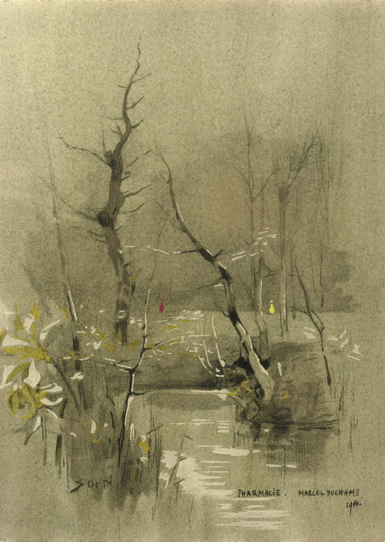

Kraftwerk, Spacelab - Soundcheck - ανάγνωση του κειμένου του σταθμού.
00:06:20
Ποιήμα: Thelma Nava, El Primer Animal
(To ποιήμα μοιράστηκε μεταφρασμένο στους ακροατές/τριες/τα)
00:09:02
Velimir Khlebnikov, Radio of the Future
00:13:30
Ανάγνωση αποσπασμάτων από τα κείμενα Η αναγκαιότητα της
Αθεΐας, (Percy B. Shelley) και Η φιλοσοφία της αθεΐας και η αποτυχία του
Χριστιανισμού (Emma Goldman), εκδόσεις ΠΑΝΟΠΤΙΚΟΝ.
John Cage, Roaratorio: An Irish Circus on Finnegans Wake
00:25:17
Assata Shakur, Letter to Pope
00:28:11
Пик Клаксон, Полуарлекин, полумонах.
00:31:14
Ανάγνωση αποσπασμάτων από τo κείμενο: Oliver Marchant, Πολιτική και
καλλιτεχνικές πρακτικές για την αισθητική της δημόσιας σφαίρας
από το βιβλίο Το πολιτικό στη σύγχρονη τέχνη, εκδόσεις Εκρεμές.
00:35:14
Пик Клаксон, Что для чего.
Τρίτη Μετάδοση-108,0 FM
22/10/25
00:00:00
Ανάγνωση κειμένου: Thomas Hirschhorn: Κάνω Τέχνη Πολιτικά/Doing Art Politicaly (2008).
Τέταρτη Μετάδοση - 87,1 FM
22/10/25

Pharmacy, Marcel Duchamp
00:00:00
Tuba Skinny Dusting the frets
00:02:21
Ανάγνωση κειμένου: Marcel Duchamp, Σχετικώς με τα έτοιμα προϊόντα/A propos of Ready-mades (1961).
00:05:55
Tuba Skinny, Deep Minor Rhythm Stomp
00:09:35
Ανάγνωση ποιήματος: Sylvia Plath, Η Άλλη/The Other (1962).
00:11:47
Tuba Skinny, Oh Papa
00:15:27
Ακρόαση ηχογραφίσεων από το χάρτη του Radio Aporee, Ιαπωνία (Πρωινό με αέρα στο βορειότερο σημέιο της χώρας) & Βόρεια Κορέα, (Παιδιά που παίζουν στη σχολική μπάντα)
Σύνδεσμος του ηχητικού χάρτη: Radio Aporee, https://aporee.org/maps/